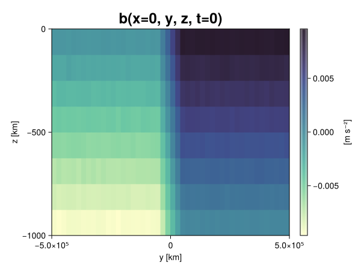
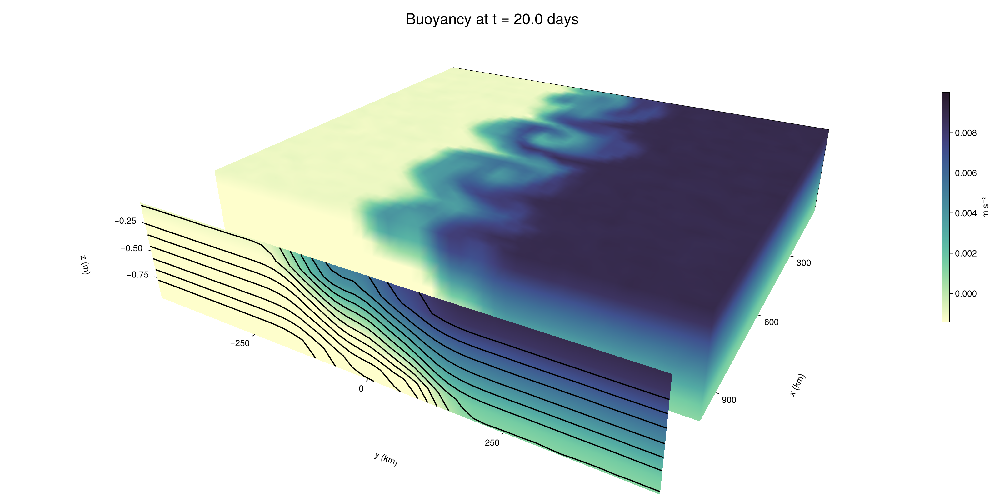

Baroclinic adjustment
In this example, we simulate the evolution and equilibration of a baroclinically unstable front.
Install dependencies
First let's make sure we have all required packages installed.
using Pkg
pkg"add Oceananigans, CairoMakie"using Oceananigans
using Oceananigans.UnitsGrid
We use a three-dimensional channel that is periodic in the x direction:
Lx = 1000kilometers # east-west extent [m]
Ly = 1000kilometers # north-south extent [m]
Lz = 1kilometers # depth [m]
grid = RectilinearGrid(size = (48, 48, 8),
x = (0, Lx),
y = (-Ly/2, Ly/2),
z = (-Lz, 0),
topology = (Periodic, Bounded, Bounded))48×48×8 RectilinearGrid{Float64, Periodic, Bounded, Bounded} on CPU with 3×3×3 halo
├── Periodic x ∈ [0.0, 1.0e6) regularly spaced with Δx=20833.3
├── Bounded y ∈ [-500000.0, 500000.0] regularly spaced with Δy=20833.3
└── Bounded z ∈ [-1000.0, 0.0] regularly spaced with Δz=125.0Model
We built a HydrostaticFreeSurfaceModel with an ImplicitFreeSurface solver. Regarding Coriolis, we use a beta-plane centered at 45° South.
model = HydrostaticFreeSurfaceModel(; grid,
coriolis = BetaPlane(latitude = -45),
buoyancy = BuoyancyTracer(),
tracers = :b,
momentum_advection = WENO(),
tracer_advection = WENO())HydrostaticFreeSurfaceModel{CPU, RectilinearGrid}(time = 0 seconds, iteration = 0)
├── grid: 48×48×8 RectilinearGrid{Float64, Periodic, Bounded, Bounded} on CPU with 3×3×3 halo
├── timestepper: QuasiAdamsBashforth2TimeStepper
├── tracers: b
├── closure: Nothing
├── buoyancy: BuoyancyTracer with ĝ = NegativeZDirection()
├── free surface: ImplicitFreeSurface with gravitational acceleration 9.80665 m s⁻²
│ └── solver: FFTImplicitFreeSurfaceSolver
├── advection scheme:
│ ├── momentum: WENO reconstruction order 5
│ └── b: WENO reconstruction order 5
└── coriolis: BetaPlane{Float64}We start our simulation from rest with a baroclinically unstable buoyancy distribution. We use ramp(y, Δy), defined below, to specify a front with width Δy and horizontal buoyancy gradient M². We impose the front on top of a vertical buoyancy gradient N² and a bit of noise.
"""
ramp(y, Δy)
Linear ramp from 0 to 1 between -Δy/2 and +Δy/2.
For example:
```
y < -Δy/2 => ramp = 0
-Δy/2 < y < -Δy/2 => ramp = y / Δy
y > Δy/2 => ramp = 1
```
"""
ramp(y, Δy) = min(max(0, y/Δy + 1/2), 1)
N² = 1e-5 # [s⁻²] buoyancy frequency / stratification
M² = 1e-7 # [s⁻²] horizontal buoyancy gradient
Δy = 100kilometers # width of the region of the front
Δb = Δy * M² # buoyancy jump associated with the front
ϵb = 1e-2 * Δb # noise amplitude
bᵢ(x, y, z) = N² * z + Δb * ramp(y, Δy) + ϵb * randn()
set!(model, b=bᵢ)Let's visualize the initial buoyancy distribution.
using CairoMakie
# Build coordinates with units of kilometers
x, y, z = 1e-3 .* nodes(grid, (Center(), Center(), Center()))
b = model.tracers.b
fig, ax, hm = heatmap(view(b, 1, :, :),
colormap = :deep,
axis = (xlabel = "y [km]",
ylabel = "z [km]",
title = "b(x=0, y, z, t=0)",
titlesize = 24))
Colorbar(fig[1, 2], hm, label = "[m s⁻²]")
fig
Simulation
Now let's build a Simulation.
simulation = Simulation(model, Δt=20minutes, stop_time=20days)Simulation of HydrostaticFreeSurfaceModel{CPU, RectilinearGrid}(time = 0 seconds, iteration = 0)
├── Next time step: 20 minutes
├── Elapsed wall time: 0 seconds
├── Wall time per iteration: NaN days
├── Stop time: 20 days
├── Stop iteration : Inf
├── Wall time limit: Inf
├── Callbacks: OrderedDict with 4 entries:
│ ├── stop_time_exceeded => Callback of stop_time_exceeded on IterationInterval(1)
│ ├── stop_iteration_exceeded => Callback of stop_iteration_exceeded on IterationInterval(1)
│ ├── wall_time_limit_exceeded => Callback of wall_time_limit_exceeded on IterationInterval(1)
│ └── nan_checker => Callback of NaNChecker for u on IterationInterval(100)
├── Output writers: OrderedDict with no entries
└── Diagnostics: OrderedDict with no entriesWe add a TimeStepWizard callback to adapt the simulation's time-step,
conjure_time_step_wizard!(simulation, IterationInterval(20), cfl=0.2, max_Δt=20minutes)Also, we add a callback to print a message about how the simulation is going,
using Printf
wall_clock = Ref(time_ns())
function print_progress(sim)
u, v, w = model.velocities
progress = 100 * (time(sim) / sim.stop_time)
elapsed = (time_ns() - wall_clock[]) / 1e9
@printf("[%05.2f%%] i: %d, t: %s, wall time: %s, max(u): (%6.3e, %6.3e, %6.3e) m/s, next Δt: %s\n",
progress, iteration(sim), prettytime(sim), prettytime(elapsed),
maximum(abs, u), maximum(abs, v), maximum(abs, w), prettytime(sim.Δt))
wall_clock[] = time_ns()
return nothing
end
add_callback!(simulation, print_progress, IterationInterval(100))Diagnostics/Output
Here, we save the buoyancy, $b$, at the edges of our domain as well as the zonal ($x$) average of buoyancy.
u, v, w = model.velocities
ζ = ∂x(v) - ∂y(u)
B = Average(b, dims=1)
U = Average(u, dims=1)
V = Average(v, dims=1)
filename = "baroclinic_adjustment"
save_fields_interval = 0.5day
slicers = (east = (grid.Nx, :, :),
north = (:, grid.Ny, :),
bottom = (:, :, 1),
top = (:, :, grid.Nz))
for side in keys(slicers)
indices = slicers[side]
simulation.output_writers[side] = JLD2OutputWriter(model, (; b, ζ);
filename = filename * "_$(side)_slice",
schedule = TimeInterval(save_fields_interval),
overwrite_existing = true,
indices)
end
simulation.output_writers[:zonal] = JLD2OutputWriter(model, (; b=B, u=U, v=V);
filename = filename * "_zonal_average",
schedule = TimeInterval(save_fields_interval),
overwrite_existing = true)JLD2OutputWriter scheduled on TimeInterval(12 hours):
├── filepath: ./baroclinic_adjustment_zonal_average.jld2
├── 3 outputs: (b, u, v)
├── array type: Array{Float64}
├── including: [:grid, :coriolis, :buoyancy, :closure]
├── file_splitting: NoFileSplitting
└── file size: 30.7 KiBNow we're ready to run.
@info "Running the simulation..."
run!(simulation)
@info "Simulation completed in " * prettytime(simulation.run_wall_time)[ Info: Running the simulation...
[ Info: Initializing simulation...
[00.00%] i: 0, t: 0 seconds, wall time: 12.598 seconds, max(u): (0.000e+00, 0.000e+00, 0.000e+00) m/s, next Δt: 20 minutes
[ Info: ... simulation initialization complete (12.910 seconds)
[ Info: Executing initial time step...
[ Info: ... initial time step complete (20.500 seconds).
[06.94%] i: 100, t: 1.389 days, wall time: 34.420 seconds, max(u): (1.242e-01, 1.334e-01, 1.534e-03) m/s, next Δt: 20 minutes
[13.89%] i: 200, t: 2.778 days, wall time: 2.244 seconds, max(u): (2.252e-01, 1.939e-01, 1.811e-03) m/s, next Δt: 20 minutes
[20.83%] i: 300, t: 4.167 days, wall time: 2.329 seconds, max(u): (2.872e-01, 2.868e-01, 1.902e-03) m/s, next Δt: 20 minutes
[27.78%] i: 400, t: 5.556 days, wall time: 2.602 seconds, max(u): (3.699e-01, 3.794e-01, 1.932e-03) m/s, next Δt: 20 minutes
[34.72%] i: 500, t: 6.944 days, wall time: 2.293 seconds, max(u): (4.686e-01, 5.414e-01, 1.936e-03) m/s, next Δt: 20 minutes
[41.67%] i: 600, t: 8.333 days, wall time: 2.263 seconds, max(u): (5.543e-01, 8.388e-01, 2.600e-03) m/s, next Δt: 20 minutes
[48.61%] i: 700, t: 9.722 days, wall time: 2.216 seconds, max(u): (7.747e-01, 1.189e+00, 3.139e-03) m/s, next Δt: 20 minutes
[55.56%] i: 800, t: 11.111 days, wall time: 2.249 seconds, max(u): (1.180e+00, 1.246e+00, 4.844e-03) m/s, next Δt: 20 minutes
[62.50%] i: 900, t: 12.500 days, wall time: 2.200 seconds, max(u): (1.420e+00, 1.252e+00, 4.687e-03) m/s, next Δt: 20 minutes
[69.44%] i: 1000, t: 13.889 days, wall time: 2.235 seconds, max(u): (1.471e+00, 1.048e+00, 4.311e-03) m/s, next Δt: 20 minutes
[76.39%] i: 1100, t: 15.278 days, wall time: 2.227 seconds, max(u): (1.404e+00, 1.009e+00, 3.569e-03) m/s, next Δt: 20 minutes
[83.33%] i: 1200, t: 16.667 days, wall time: 2.240 seconds, max(u): (1.485e+00, 1.094e+00, 2.376e-03) m/s, next Δt: 20 minutes
[90.28%] i: 1300, t: 18.056 days, wall time: 2.235 seconds, max(u): (1.493e+00, 1.173e+00, 2.786e-03) m/s, next Δt: 20 minutes
[97.22%] i: 1400, t: 19.444 days, wall time: 2.199 seconds, max(u): (1.474e+00, 1.188e+00, 2.590e-03) m/s, next Δt: 20 minutes
[ Info: Simulation is stopping after running for 1.149 minutes.
[ Info: Simulation time 20 days equals or exceeds stop time 20 days.
[ Info: Simulation completed in 1.150 minutes
Visualization
All that's left is to make a pretty movie. Actually, we make two visualizations here. First, we illustrate how to make a 3D visualization with Makie's Axis3 and Makie.surface. Then we make a movie in 2D. We use CairoMakie in this example, but note that using GLMakie is more convenient on a system with OpenGL, as figures will be displayed on the screen.
using CairoMakieThree-dimensional visualization
We load the saved buoyancy output on the top, north, and east surface as FieldTimeSerieses.
filename = "baroclinic_adjustment"
sides = keys(slicers)
slice_filenames = NamedTuple(side => filename * "_$(side)_slice.jld2" for side in sides)
b_timeserieses = (east = FieldTimeSeries(slice_filenames.east, "b"),
north = FieldTimeSeries(slice_filenames.north, "b"),
top = FieldTimeSeries(slice_filenames.top, "b"))
B_timeseries = FieldTimeSeries(filename * "_zonal_average.jld2", "b")
times = B_timeseries.times
grid = B_timeseries.grid48×48×8 RectilinearGrid{Float64, Periodic, Bounded, Bounded} on CPU with 3×3×3 halo
├── Periodic x ∈ [0.0, 1.0e6) regularly spaced with Δx=20833.3
├── Bounded y ∈ [-500000.0, 500000.0] regularly spaced with Δy=20833.3
└── Bounded z ∈ [-1000.0, 0.0] regularly spaced with Δz=125.0We build the coordinates. We rescale horizontal coordinates to kilometers.
xb, yb, zb = nodes(b_timeserieses.east)
xb = xb ./ 1e3 # convert m -> km
yb = yb ./ 1e3 # convert m -> km
Nx, Ny, Nz = size(grid)
x_xz = repeat(x, 1, Nz)
y_xz_north = y[end] * ones(Nx, Nz)
z_xz = repeat(reshape(z, 1, Nz), Nx, 1)
x_yz_east = x[end] * ones(Ny, Nz)
y_yz = repeat(y, 1, Nz)
z_yz = repeat(reshape(z, 1, Nz), grid.Ny, 1)
x_xy = x
y_xy = y
z_xy_top = z[end] * ones(grid.Nx, grid.Ny)Then we create a 3D axis. We use zonal_slice_displacement to control where the plot of the instantaneous zonal average flow is located.
fig = Figure(size = (1600, 800))
zonal_slice_displacement = 1.2
ax = Axis3(fig[2, 1],
aspect=(1, 1, 1/5),
xlabel = "x (km)",
ylabel = "y (km)",
zlabel = "z (m)",
xlabeloffset = 100,
ylabeloffset = 100,
zlabeloffset = 100,
limits = ((x[1], zonal_slice_displacement * x[end]), (y[1], y[end]), (z[1], z[end])),
elevation = 0.45,
azimuth = 6.8,
xspinesvisible = false,
zgridvisible = false,
protrusions = 40,
perspectiveness = 0.7)Axis3()We use data from the final savepoint for the 3D plot. Note that this plot can easily be animated by using Makie's Observable. To dive into Observables, check out Makie.jl's Documentation.
n = length(times)41Now let's make a 3D plot of the buoyancy and in front of it we'll use the zonally-averaged output to plot the instantaneous zonal-average of the buoyancy.
b_slices = (east = interior(b_timeserieses.east[n], 1, :, :),
north = interior(b_timeserieses.north[n], :, 1, :),
top = interior(b_timeserieses.top[n], :, :, 1))
# Zonally-averaged buoyancy
B = interior(B_timeseries[n], 1, :, :)
clims = 1.1 .* extrema(b_timeserieses.top[n][:])
kwargs = (colorrange=clims, colormap=:deep, shading=NoShading)
surface!(ax, x_yz_east, y_yz, z_yz; color = b_slices.east, kwargs...)
surface!(ax, x_xz, y_xz_north, z_xz; color = b_slices.north, kwargs...)
surface!(ax, x_xy, y_xy, z_xy_top; color = b_slices.top, kwargs...)
sf = surface!(ax, zonal_slice_displacement .* x_yz_east, y_yz, z_yz; color = B, kwargs...)
contour!(ax, y, z, B; transformation = (:yz, zonal_slice_displacement * x[end]),
levels = 15, linewidth = 2, color = :black)
Colorbar(fig[2, 2], sf, label = "m s⁻²", height = Relative(0.4), tellheight=false)
title = "Buoyancy at t = " * string(round(times[n] / day, digits=1)) * " days"
fig[1, 1:2] = Label(fig, title; fontsize = 24, tellwidth = false, padding = (0, 0, -120, 0))
rowgap!(fig.layout, 1, Relative(-0.2))
colgap!(fig.layout, 1, Relative(-0.1))
save("baroclinic_adjustment_3d.png", fig)
Two-dimensional movie
We make a 2D movie that shows buoyancy $b$ and vertical vorticity $ζ$ at the surface, as well as the zonally-averaged zonal and meridional velocities $U$ and $V$ in the $(y, z)$ plane. First we load the FieldTimeSeries and extract the additional coordinates we'll need for plotting
ζ_timeseries = FieldTimeSeries(slice_filenames.top, "ζ")
U_timeseries = FieldTimeSeries(filename * "_zonal_average.jld2", "u")
B_timeseries = FieldTimeSeries(filename * "_zonal_average.jld2", "b")
V_timeseries = FieldTimeSeries(filename * "_zonal_average.jld2", "v")
xζ, yζ, zζ = nodes(ζ_timeseries)
yv = ynodes(V_timeseries)
xζ = xζ ./ 1e3 # convert m -> km
yζ = yζ ./ 1e3 # convert m -> km
yv = yv ./ 1e3 # convert m -> km49-element Vector{Float64}:
-500.0
-479.1666666666667
-458.3333333333333
-437.5
-416.6666666666667
-395.8333333333333
-375.0
-354.1666666666667
-333.3333333333333
-312.5
-291.6666666666667
-270.8333333333333
-250.0
-229.16666666666666
-208.33333333333334
-187.5
-166.66666666666666
-145.83333333333334
-125.0
-104.16666666666667
-83.33333333333333
-62.5
-41.666666666666664
-20.833333333333332
0.0
20.833333333333332
41.666666666666664
62.5
83.33333333333333
104.16666666666667
125.0
145.83333333333334
166.66666666666666
187.5
208.33333333333334
229.16666666666666
250.0
270.8333333333333
291.6666666666667
312.5
333.3333333333333
354.1666666666667
375.0
395.8333333333333
416.6666666666667
437.5
458.3333333333333
479.1666666666667
500.0Next, we set up a plot with 4 panels. The top panels are large and square, while the bottom panels get a reduced aspect ratio through rowsize!.
set_theme!(Theme(fontsize=24))
fig = Figure(size=(1800, 1000))
axb = Axis(fig[1, 2], xlabel="x (km)", ylabel="y (km)", aspect=1)
axζ = Axis(fig[1, 3], xlabel="x (km)", ylabel="y (km)", aspect=1, yaxisposition=:right)
axu = Axis(fig[2, 2], xlabel="y (km)", ylabel="z (m)")
axv = Axis(fig[2, 3], xlabel="y (km)", ylabel="z (m)", yaxisposition=:right)
rowsize!(fig.layout, 2, Relative(0.3))To prepare a plot for animation, we index the timeseries with an Observable,
n = Observable(1)
b_top = @lift interior(b_timeserieses.top[$n], :, :, 1)
ζ_top = @lift interior(ζ_timeseries[$n], :, :, 1)
U = @lift interior(U_timeseries[$n], 1, :, :)
V = @lift interior(V_timeseries[$n], 1, :, :)
B = @lift interior(B_timeseries[$n], 1, :, :)Observable([-0.009398214778332026 -0.008095417774964237 -0.006859562634121737 -0.005611498574608092 -0.004368042388867068 -0.003124111767460218 -0.0018831259271267801 -0.0006362504466593113; -0.009361598783724648 -0.008143257126103637 -0.006891606116573187 -0.0055857781904375655 -0.004371910571172914 -0.003133923997502302 -0.0018979001238585858 -0.000630585028931385; -0.0093730119894839 -0.008104306225244221 -0.00685751626854068 -0.0056409818410238085 -0.004376994480327248 -0.003114590873210033 -0.001873196640329333 -0.0006458970662727958; -0.00936566219965528 -0.008141838413538029 -0.006884265451118866 -0.005618628724173527 -0.004365429403496675 -0.003111849939861546 -0.001860714422560252 -0.0006331060423542325; -0.009364078418548935 -0.008124837171345415 -0.0068825324646209635 -0.005592941944453258 -0.004372346035688142 -0.0031276462667243423 -0.0018796578716312046 -0.000650619572403701; -0.009354504006333747 -0.008140893112326353 -0.0068878315243033695 -0.005641462665412621 -0.00438651905128541 -0.0031403852837364244 -0.001855934593619913 -0.0006226983280341359; -0.009350143101624539 -0.008102497558897382 -0.00686877754888218 -0.005637186881200852 -0.004362549843282258 -0.003119610804168204 -0.0018505025817473462 -0.0006338053682157556; -0.009363033237847602 -0.008141511371523726 -0.006874558732100212 -0.005604526948152884 -0.004368714240282225 -0.003123250819248316 -0.0018513054808438764 -0.000616153009319326; -0.00936953782206349 -0.008158659015301844 -0.006864577075657735 -0.005623821694646928 -0.004371858201141978 -0.0031385136062114017 -0.0018631015212264982 -0.0006171809052142347; -0.009379528995074646 -0.008136085772860588 -0.006868764455999446 -0.005650519799607591 -0.004368339898866717 -0.0031125481783096753 -0.0018819836136877383 -0.0006112629022900443; -0.009378491764317088 -0.00812815164374856 -0.006889914663166366 -0.0056325377942032726 -0.004379652440450949 -0.0031060535104226925 -0.0018733798075944719 -0.0006199849422126244; -0.009419862832504854 -0.008129835018269648 -0.006879643957918455 -0.005612787303892049 -0.004365214056633255 -0.0031388176620937755 -0.0018682747066367845 -0.0006228434321573977; -0.009349293725188983 -0.008121535156729337 -0.006882073405426316 -0.005639926855949489 -0.004364846352051143 -0.003083972453459371 -0.0018707126632510809 -0.0006256805370254221; -0.009391247126050368 -0.008132447665399856 -0.006857920452957887 -0.005640874807957833 -0.004358922700901476 -0.0031371081739912207 -0.0018680996478025326 -0.0006173976467337638; -0.009379270334409544 -0.008146043820327633 -0.006863038648014976 -0.005622302569281835 -0.004381509548412953 -0.0031378796711032924 -0.0018764395959171998 -0.000613751510901922; -0.009367683698863335 -0.008106747029850892 -0.006871006734462271 -0.005621283081887779 -0.004390445125290343 -0.003120284827868752 -0.0018633634039027273 -0.0006279646302861056; -0.009357955867346517 -0.008144963273619125 -0.00687296504137323 -0.005623116201742548 -0.004389870435145142 -0.003147463814108242 -0.0018760057890301407 -0.0006444739866967611; -0.0093775097735873 -0.008098306492238834 -0.006889971906754115 -0.0056145268652987084 -0.004368656910266331 -0.0031369667232773978 -0.0018756401643046032 -0.0006225181396111476; -0.00938949986839452 -0.008129146544376907 -0.006874586949899563 -0.005606814288052289 -0.004359458254389836 -0.003155820512370733 -0.0018606480214878034 -0.0006087408964716758; -0.009369907852914285 -0.008132795937441793 -0.0068869934179462714 -0.005622262560671681 -0.004380193558534088 -0.003121654736527072 -0.0018675619408834079 -0.0006323624519602738; -0.009362464686885705 -0.008113209632399886 -0.006898320862999497 -0.0056230170021644085 -0.004369729423627789 -0.003143505503628616 -0.0018977219572483594 -0.0006528590504867398; -0.009359484500205637 -0.008137423488372514 -0.006876922027340109 -0.0056213064423636635 -0.004377236749584688 -0.003122552693523862 -0.001852737600922637 -0.0006330879505234229; -0.007504683159660591 -0.00623462051644718 -0.0050095666484977685 -0.003754962492464918 -0.002485754079302723 -0.001244517921450268 -1.288413362225365e-5 0.001241987408980989; -0.00544742068920591 -0.0041818660881757065 -0.0029292410093447016 -0.0016589840156827536 -0.00040062919235660547 0.0008514524259343638 0.0021094750344788997 0.003329857147883291; -0.003314080654924636 -0.0020829464859748992 -0.0008475029979124324 0.0004326940525870425 0.0016561860550605826 0.0029064543398556407 0.0041695222865580535 0.005411629709634928; -0.0012195039310753184 -1.8371325812442324e-5 0.0012491249649567585 0.002501379365681996 0.003758179362032637 0.00498425925247726 0.006256676196763178 0.007487913403566983; 0.0006457765030185303 0.0018731613594805457 0.0031502026817013793 0.00439183312193035 0.005649531007327922 0.006873210699930694 0.008135853377341204 0.00935989967098439; 0.0006144087154427496 0.0018803218770461101 0.0031290856867150518 0.004364668457059708 0.005607339128638082 0.00689650386211067 0.008115955682196422 0.009368589783711917; 0.0006099769913041248 0.0018983135748559584 0.0031484157038430462 0.004398646018242893 0.005628602748758094 0.006850602971853119 0.008127690656718907 0.009357567585129742; 0.0006273037964797233 0.0018593465564558159 0.0031125034316264225 0.0043859582773673605 0.005616854425507932 0.006853693144035042 0.008121863473779438 0.009401890108133365; 0.0006238364933008193 0.0018666300006468732 0.003136783726287166 0.004391568565435604 0.005626066116642979 0.0068860046766097485 0.008111950129343898 0.009388361195703453; 0.000609890243573811 0.0018714859112833793 0.0031167995144556642 0.004362874966282281 0.005622978583995968 0.006876995362325291 0.008133659576529676 0.009390735199535483; 0.0006285080376290773 0.001894226739546638 0.003122298019380517 0.0043832464707138615 0.005619993629144278 0.006871508249495374 0.008145512131625583 0.009380071079947448; 0.0006476456934403716 0.0018741719778001722 0.0031364956309728534 0.004376100361754183 0.005623333684514553 0.006860554069898408 0.008155636447575129 0.009385806132985095; 0.0006201875512334526 0.0018733796471279232 0.003138713590789223 0.004359745844622078 0.005618902155826725 0.006863192933665299 0.008149965724299683 0.009348040134084743; 0.0006026870836620921 0.0018677597168413398 0.003152478720349518 0.004400441926898177 0.005636906216370088 0.006865504062319948 0.008120159033628333 0.009347923745998063; 0.0006206905823701921 0.0018859547571510404 0.003142279723892647 0.004387540684698908 0.005643713581410092 0.006871527344640215 0.008127245665253883 0.009365366532547265; 0.0006387290554332309 0.0018638293261497019 0.0031165062543828414 0.004358139917860587 0.005643281309070288 0.0069105999069977615 0.008119762717653956 0.009369430440203115; 0.0005837901484067512 0.001862190533709629 0.003117380760538938 0.004375799263184369 0.005638929894924303 0.006876243733142187 0.008115171635853208 0.009340864494997388; 0.0006331144045536723 0.0018602319928924637 0.003137871826401581 0.00438212544361847 0.005611137650966319 0.006886394598788976 0.008126930018571251 0.0093943460135891; 0.0006491213998263331 0.0018696252222449611 0.0031426994014701333 0.004371014180840926 0.005635872271427287 0.006885094270411045 0.00813992764374229 0.009374463461010356; 0.0006463382971912669 0.0018607324145421065 0.0031325825297496925 0.004361681866906458 0.005613042799508656 0.0068527316472647955 0.008116591037032923 0.009396704681863459; 0.0006186050944903121 0.0018664409236528682 0.0031065463099328346 0.004380629952024734 0.005608893921798184 0.006867401702615382 0.00814503708987717 0.009379020901953769; 0.0006121161794018764 0.001863436603305511 0.0031212590157363752 0.0043765680652999885 0.005632726491526767 0.006891519190392979 0.008133000957974963 0.00935479975618028; 0.0006112129421888031 0.0018787980547524867 0.0031085149026297177 0.004394934063221798 0.005630149801161417 0.006889598717539767 0.008104662751686673 0.009364177464894699; 0.0006202907631944125 0.0018838852258358286 0.0031300111137426497 0.004390247486302265 0.005611135824650172 0.006862540788349222 0.008127938807086807 0.00937082130602425; 0.0006290279090012136 0.0018540084653176539 0.003125003051929547 0.0043811232295274715 0.005628339187457379 0.0068793951113583 0.008129465369283885 0.009402060256720692; 0.0006226575411162601 0.001870078918375136 0.0031193686348975017 0.004372488741091552 0.005628737404876388 0.0068497879806039596 0.008132894153502197 0.009386588874462025])
and then build our plot:
hm = heatmap!(axb, xb, yb, b_top, colorrange=(0, Δb), colormap=:thermal)
Colorbar(fig[1, 1], hm, flipaxis=false, label="Surface b(x, y) (m s⁻²)")
hm = heatmap!(axζ, xζ, yζ, ζ_top, colorrange=(-5e-5, 5e-5), colormap=:balance)
Colorbar(fig[1, 4], hm, label="Surface ζ(x, y) (s⁻¹)")
hm = heatmap!(axu, yb, zb, U; colorrange=(-5e-1, 5e-1), colormap=:balance)
Colorbar(fig[2, 1], hm, flipaxis=false, label="Zonally-averaged U(y, z) (m s⁻¹)")
contour!(axu, yb, zb, B; levels=15, color=:black)
hm = heatmap!(axv, yv, zb, V; colorrange=(-1e-1, 1e-1), colormap=:balance)
Colorbar(fig[2, 4], hm, label="Zonally-averaged V(y, z) (m s⁻¹)")
contour!(axv, yb, zb, B; levels=15, color=:black)Finally, we're ready to record the movie.
frames = 1:length(times)
record(fig, filename * ".mp4", frames, framerate=8) do i
n[] = i
endThis page was generated using Literate.jl.